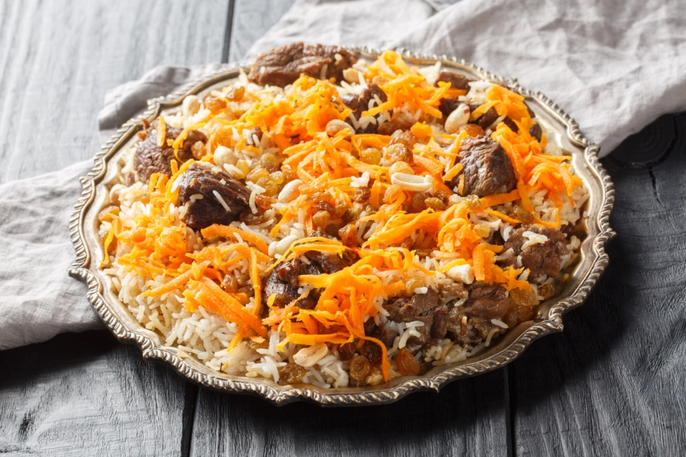

Kabuli Palaw

Ingredients:
- 2 cups basmati rice
- 500g boneless lamb or beef
- 2 carrots (shredded)
- 1/4 cup raisins
- 1 tsp garam masala
- 1/2 tsp cinnamon
- Salt and pepper to taste
Cooking Instructions:
- Rinse and soak the rice in water for 30 minutes.
- Boil meat with spices until tender.
- Cook rice separately in salted water, then drain.
- Sauté shredded carrots and raisins in a little oil.
- Layer meat and rice in a pot, sprinkle the carrot-raisin mix on top.
- Steam everything together on low heat for 20-30 minutes.